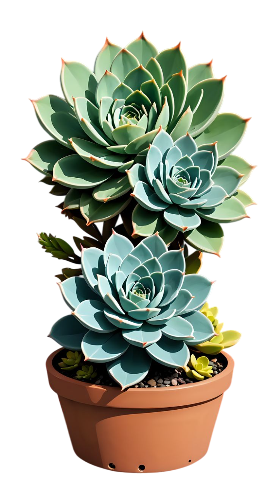
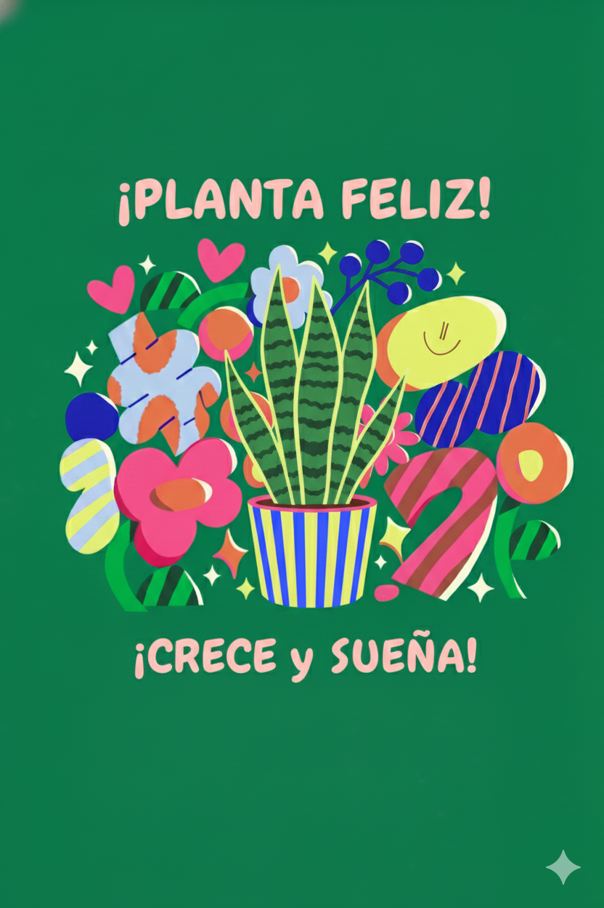
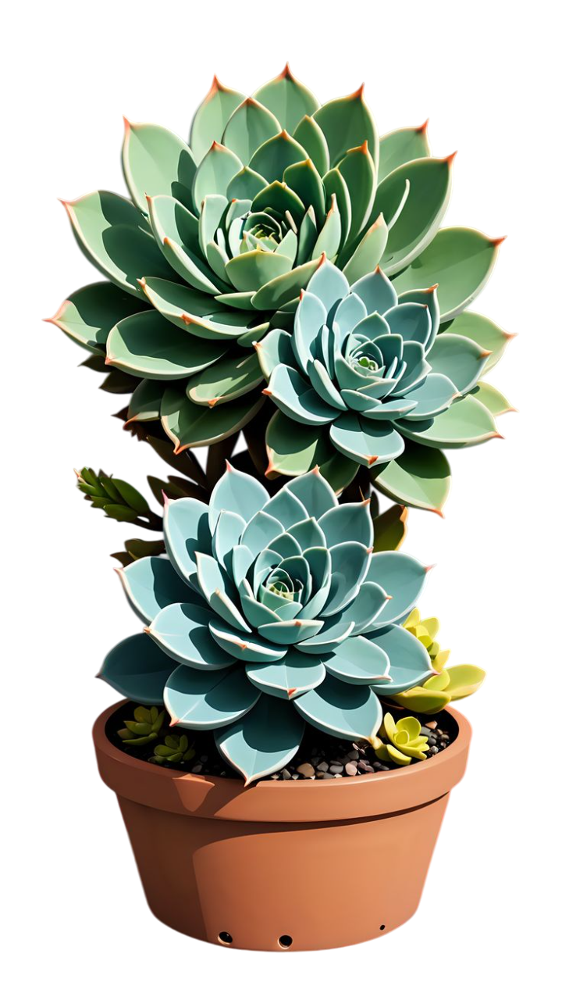
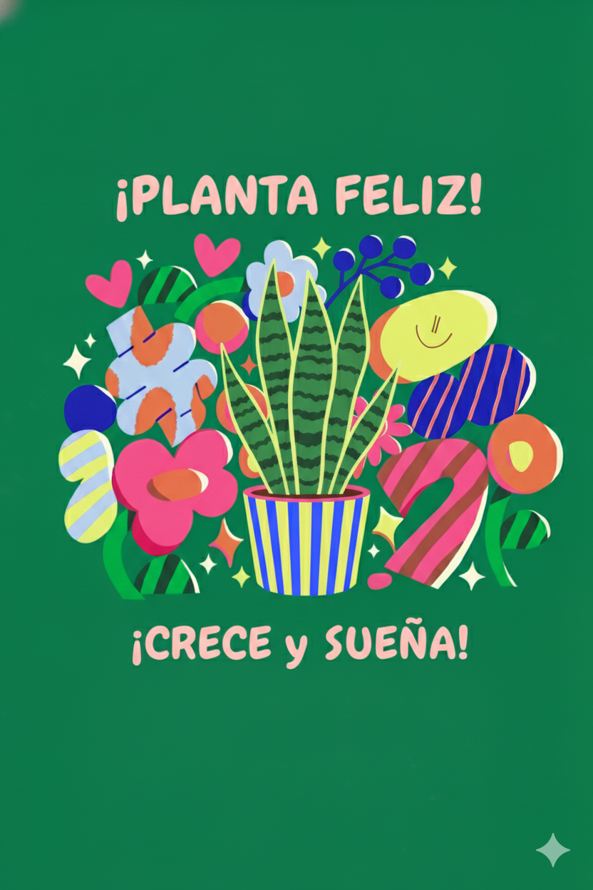

LeaftIQ by ArcadiaDevs
LeaftIQ
La inteligencia crece aquí

 



Cuida tus plantas y cultivos con inteligencia
Identifica plagas con una foto, recibe alertas climáticas hiperlocales y obtén planes de riego y nutrientes según tu zona. Funciona offline y sincroniza cuando vuelves a tener señal.
TAL VEZ TE PREGUNTES
¿Por qué es tan difícil cuidar bien un cultivo?
La variabilidad del clima, la falta de diagnósticos rápidos y la escasez de asesoría accesible provocan pérdidas y malgasto de agua, tanto en huertos urbanos como en pequeñas parcelas rurales. LeafIQ reduce la incertidumbre con datos y guías prácticas.
segmento rural
3 de cada 5 pequeños productores reportan pérdidas por clima impredecible.
Hasta 25% del riego puede perderse por calendarios no optimizados.
40% de incidencias tardías de plagas se detectan cuando el daño ya es alto.
segmento urbano
62% de los huerteros abandona por "falta de tiempo/guía".
48% riega de más en verano por no contar con alertas locales.
30% no sabe identificar la plaga/enfermedad a simple vista.